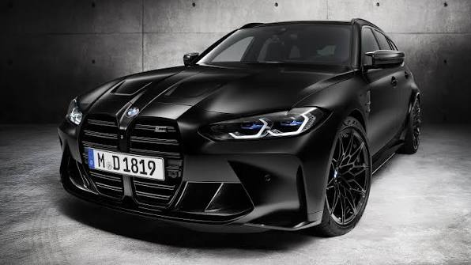

Teknik & Specifikationer
Här samlar vi grundläggande fakta om G80-generationen av BMW M3 Competition. Bilen är utrustad med det intelligenta M xDrive-fyrhjulsdriftsystemet som kan ställas om till ren bakhjulsdrift.

Tekniska Data
Motor
3.0L S58 Rak 6:a Twin-Turbo
Effekt
510 hk / 650 Nm
Acceleration
0–100 km/h på 3.5s (xDrive)
Växellåda
8-stegad M Steptronic